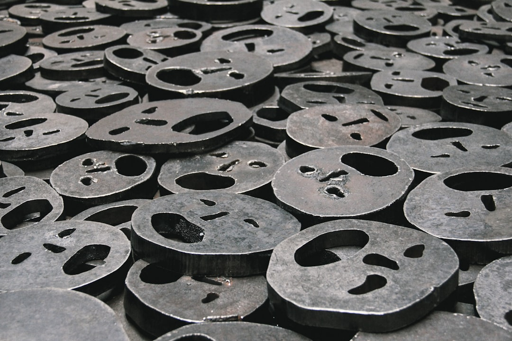

갈륨 9배 폭등 3년, 실제 병목은 '가격'이 아니다

중국은 2023년 8월 갈륨·게르마늄 수출통제를 발동한 이후 3년이 경과했다. 국제 갈륨 가격은 규제 이전 ㎏당 약 220달러 수준에서 현재 최고 1,980달러까지 폭등했으며, 평균 9배 상승이 확인됐다. 같은 기간 전 세계 갈륨 공급의 95%를 중국이 장악하고 있다는 구조적 사실은 변하지 않았다.
중국은 최근 4개월간 봉쇄했던 일본향 갈륨 수출을 재개했다. 반면 게르마늄은 동일 시점에도 여전히 수출이 막혀 있다. 소재별·국가별로 허가 발급을 선택적으로 운용하는 '차별 통제'가 고착화되고 있으며, 이는 단순한 수급 문제가 아니라 외교·기술 레버리지를 동시에 행사하는 '허가증 정치'다.
한국은 연간 갈륨 수입량의 약 87%를 중국에 의존하고 있다. 차세대 전력반도체(SiC·GaN) 및 LED 기판 소재로 쓰이는 갈륨의 국내 소비는 연간 약 30t 수준으로 추정되며, 고려아연의 2028년 연 15.5t 국산화 계획이 가동되기 전까지 구조적 공백은 최소 3년 이상 지속된다.
갈륨 수출통제의 실질적 피해는 단가 상승보다 '납기 불확실성'에서 발생한다. 수출 허가 심사 기간이 통제 이전 평균 5영업일에서 현재 45~90영업일로 늘어난 것이 복수의 무역 실무자를 통해 확인됐다. 이는 GaN 기반 전력반도체 팹 가동 계획 자체를 흔드는 수준이다.
가격 9배 폭등이라는 수치는 언론이 잘 다루지만, 현장에서 더 치명적인 신호는 '허가 리드타임 연장'이다. 갈륨 가격은 재고 축적이나 대체 소싱으로 어느 정도 완충이 가능하지만, 납기 불확실성은 팹 가동 스케줄 자체를 무너뜨린다. 차세대 전력반도체 양산 일정이 지연되면 전기차·데이터센터 전력 모듈 공급망 전체가 연쇄적으로 흔들린다.
중국이 일본에 갈륨을 재개하면서 게르마늄은 여전히 막고 있다는 점은, 통제가 '자원 민족주의' 이상의 의미를 갖는다는 것을 보여준다. 일본은 미국의 반도체 장비 대중 수출통제에 동참했지만 갈륨은 재개됐다. 이는 중국이 소재 카드를 외교 협상 테이블에서 선택적으로 활용하고 있다는 증거다. 한국도 동일한 '차별 관리' 대상이 될 수 있다.
갈륨 가격 상승의 수혜는 단기적으로 고려아연·영풍 등 비중국산 생산자에게 돌아가지만, 수요처인 국내 GaN·SiC 소재 기업들은 원가 부담 증가와 납기 리스크를 동시에 떠안는다. 9배 폭등은 단순한 수익 이슈가 아니라 국내 전력반도체 산업 경쟁력의 구조적 약점으로 작동하고 있다.
비중국산 갈륨 생산자: 고려아연은 2028년 연 15.5t 갈륨 양산을 목표로 설비 투자를 진행 중이며, 현재 국제 가격 기준으로 연간 약 307억 원 규모의 매출 잠재력을 보유한다. 러시아(Rusal 계열)와 캐나다(5N Plus) 등 비중국산 갈륨 생산자들도 현물 계약 단가를 2024년 대비 2배 이상 인상 적용 중이다.
전력반도체 소재 대체재 공급자: SiC 기판은 갈륨 의존도가 상대적으로 낮아, 갈륨 공급 불안이 장기화될수록 Wolfspeed·SK실트론(미국 공장)의 SiC 웨이퍼 주문이 집중된다. SK실트론의 미국 미시간 SiC 팹은 2025년 기준 월 5만 장 캐파 확장을 진행 중으로, 갈륨 수출통제 장기화의 반사 수혜 구간에 있다.
국내 GaN 기판·에피 소재 기업: 삼성전기·LG이노텍 등 GaN 기반 전력모듈 양산 기업은 갈륨 원료 단가 상승을 제품가에 전가하기 어렵다. 완성차·데이터센터 고객사가 장기 공급계약 단가를 고정하는 구조에서, 원료 가격 9배 폭등은 마진을 직접 압박한다.
차세대 전력반도체 팹 투자자: 갈륨 납기 불확실성(45~90영업일)이 해소되지 않으면 GaN-on-SiC 기반 팹의 가동률 계획 자체가 흔들린다. 한국 내 GaN 전력반도체 신규 팹 투자를 검토하는 기업들이 SiC 대체 전환이나 해외 소싱으로 이동하면, 국내 갈륨 수요 기반 자체가 약화되는 역설적 상황이 발생한다.
투자자라면 갈륨 현물가 지표보다 중국 해관총서의 월별 갈륨 수출 허가 건수와 품목별 통관 소요일을 선행 지표로 모니터링하라. 가격이 오르는 시점보다 허가 건수가 줄어드는 시점이 2~3개월 선행한다는 패턴이 2023년 이후 반복되고 있다.
구매담당자라면 갈륨 소싱 루트를 현재 중국 단일 채널에서 캐나다(5N Plus), 러시아(Rusal 계열), 독일(Freiberger) 복수 채널로 분산하고, 최소 3개월 재고를 선제 확보하는 '비상 재고 프로토콜'을 지금 당장 가동해야 한다. 허가 리드타임이 90영업일로 늘어난 지금, 3개월 재고는 최소 안전선이다.
고려아연 2028년 국산화 계획은 '선언'과 '실제 공급 가능 시점' 사이에 설비 투자·인증·고객 퀄 테스트까지 최소 2년 이상의 추가 리드타임이 존재한다. 2028년을 기준으로 역산하면 지금 당장 대체 소싱 계약을 체결하지 않으면 2026~2027년 공백 구간이 생긴다.
실제 조달 현장에서는 — 갈륨을 중국 단일 루트로 조달하던 국내 에피 웨이퍼 업체들이 2024년 하반기부터 독일·캐나다산 소량 현물을 '보험용'으로 병행 구매하기 시작했다. 단가는 30~40% 더 비싸지만 납기 예측 가능성 하나만으로도 정당화된다. 지금은 가격보다 '납기 확실성'을 먼저 사야 하는 시장이다.
이 포스팅은 쿠팡 파트너스 활동의 일환으로 수수료를 제공받습니다.